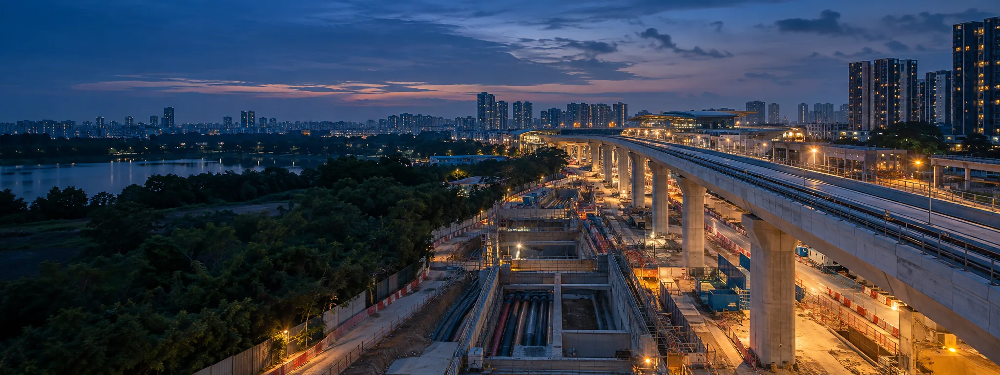
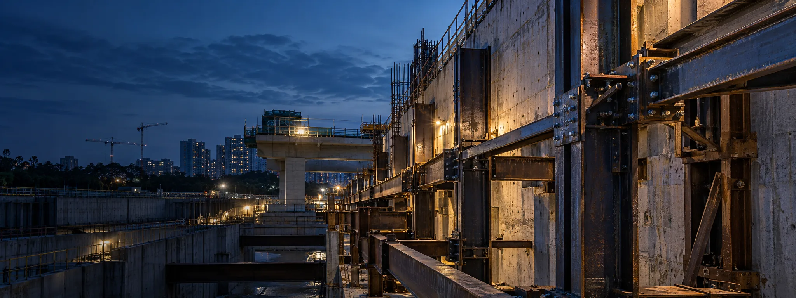
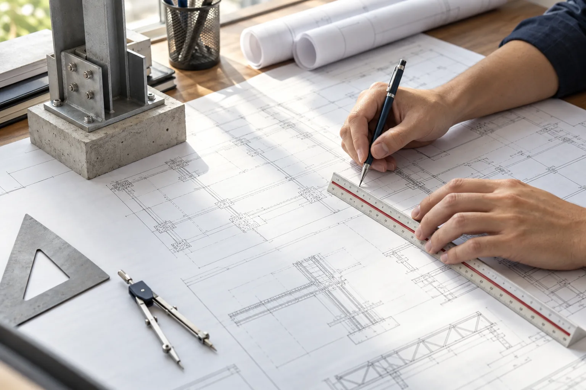

Temporary works done properly
Shoring, dewatering and working platforms designed and checked to BS 5975, so the works can be built safely and on time.
We make construction safer and more buildable — through rigorous temporary-works design and an independent second pair of expert eyes on the permanent design.
Solid, rigorous and independent support for owners and contractors delivering complex infrastructure.
Shoring, dewatering and working platforms designed and checked to BS 5975, so the works can be built safely and on time.
We review the permanent design for geotechnical, hydraulic and structural risk before it reaches the site.
Value engineering that cuts cost and complexity without compromising performance.
Veyron Infrastructure Engineering is a Singapore-based specialist engineering and independent design-review practice.
We work alongside owners and contractors on roads, drainage, utilities and structures, providing temporary-works design, independent technical review and value engineering that keep infrastructure projects safe, buildable and efficient.
About VeyronEach service is available from the start of a project or as an independent input to work already underway.
We design the temporary systems that let permanent works be built safely.
Learn moreWe give the permanent design a rigorous, independent challenge before it is built.
Learn moreWe find cost and complexity to remove while protecting performance.
Learn moreWe bring ground and construction reality into the engineering.
Learn moreWe help turn the design into safe, executable methods on site.
Learn moreEvery temporary-works item is briefed, designed, independently checked at the right category, and released by permit before loading.
Agree loads, ground parameters, design life and check category.
Chartered engineers record assumptions in calculations and drawings.
A competent checker verifies the design at the assigned category.
No temporary works are loaded until readiness is confirmed.
Construction support continues until safe striking is authorised.
We bring the same discipline and independence to each sector.

Temporary access, pavement, earthworks and intersection works.

Deep excavations, culverts, shoring and dewatering.
Culverts, retaining structures, falsework and checks.

Platform formation, ground treatment and heavy-plant access.
Clear notes on temporary works, independent review and construction risk.
Formal control is essential for systems designed quickly, used hard and removed.
Read insightA fresh expert challenge finds assumptions that familiarity can hide.
Read insightGroundwater control affects stability, movement and neighbouring assets.
Read insightLet’s talk about how Veyron can support safer, more buildable delivery.